Práticas e Circuitos - CADe SIMU
Nesta aba, você confere os diagramas desenvolvidos e as simulações executadas no CADe SIMU.
Ligar LED com botoeira
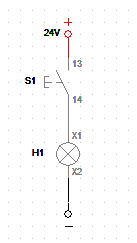
Explicação: Digite aqui a explicação do funcionamento deste primeiro circuito...
Ligar LED com botoeira e disjuntor
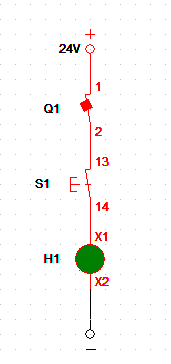
Explicação: Digite aqui a explicação do funcionamento do circuito 2...
Ligar LEDs com botoeira NA e NF
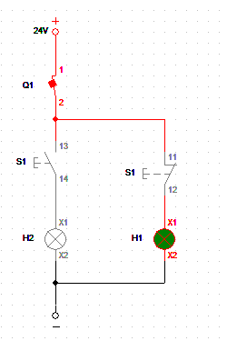
Explicação: Digite aqui a explicação do funcionamento do circuito 3...
Ligar LED com contator
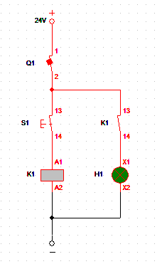
Explicação: Digite aqui a explicação do funcionamento do circuito 4...
Ligar LEDs com contator
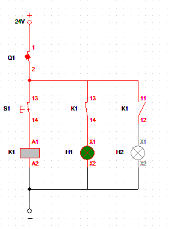
Explicação: Digite aqui a explicação do funcionamento do circuito 5...
COntato de selo
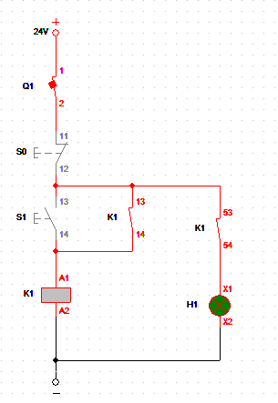
Explicação: Digite aqui a explicação do funcionamento do circuito 6...
Comando de reversão
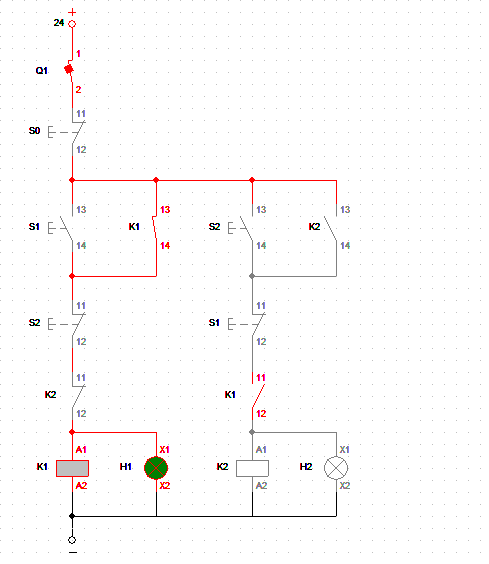
Explicação: Digite aqui a explicação do funcionamento do circuito 7...
Acionamento temporizado
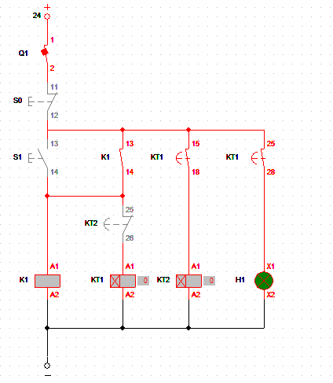
Explicação: Digite aqui a explicação do funcionamento do circuito 8...
Partida direta - Comando
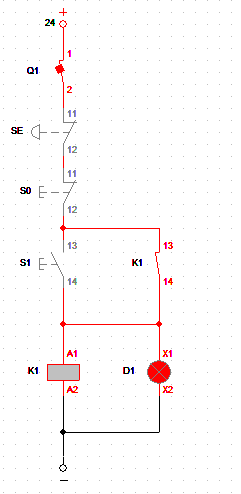
Explicação: Digite aqui a explicação do funcionamento do circuito 9...
Partida direta - Potência
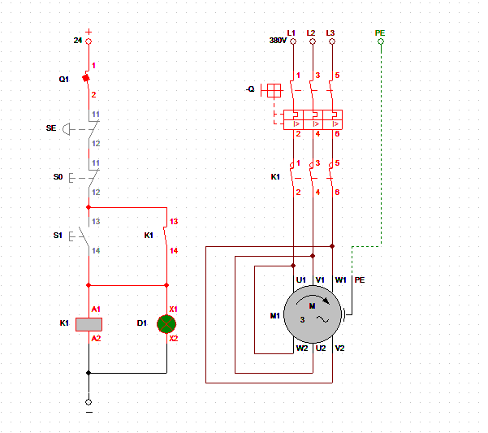
Explicação: Digite aqui a explicação do funcionamento do circuito 10...
Partida direta com reversão - Comando
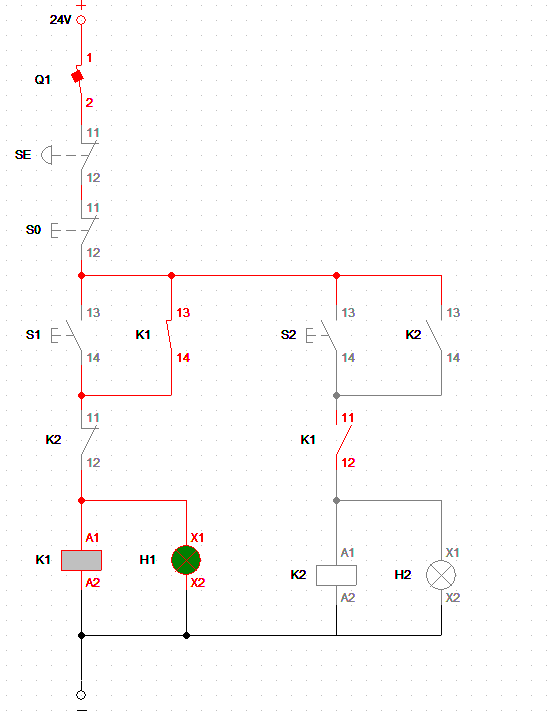
Explicação: Digite aqui a explicação do funcionamento do circuito 11...
Partida direta com reversão - Potência
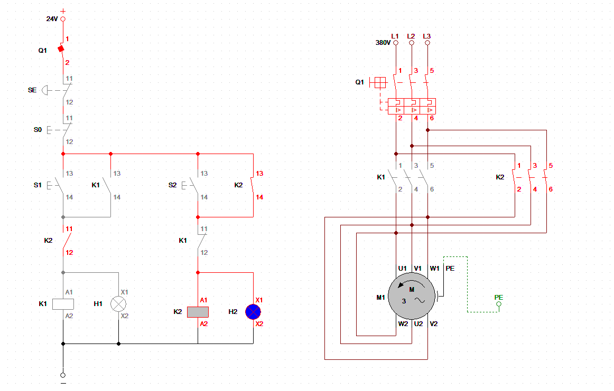
Explicação: Digite aqui a explicação do funcionamento do circuito 12...